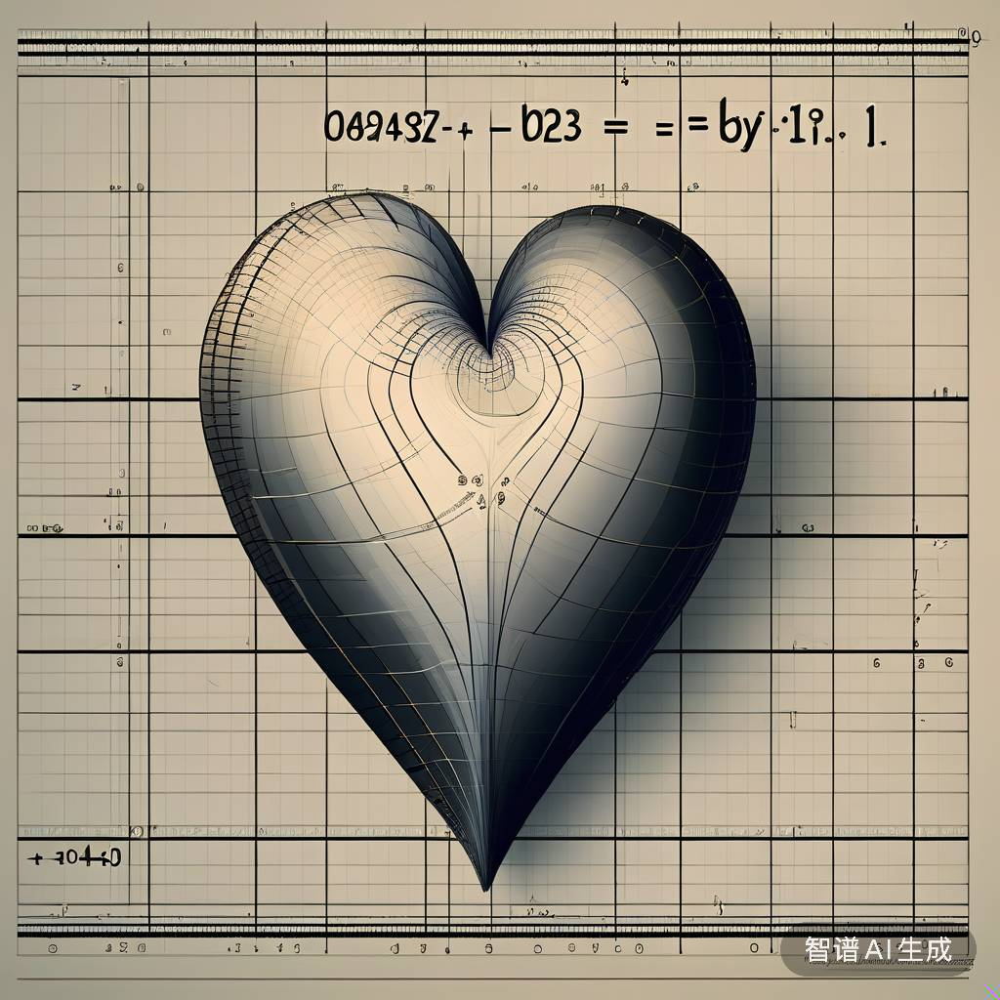

| ONTOLOGY | ID | Description | p.adjust |
|---|---|---|---|
| BP | GO:0051881 | regulation of mitochondrial membrane potential | 0.0215593 |
| CC | GO:0005759 | mitochondrial matrix | 0.0396286 |
Quarto example
中文支持
yaml头部设置如下：
pdf:
include-in-header:
text: |
\usepackage{ctex}
\usepackage{amsthm,mathrsfs}
CJKmainfont: KaiTicroos reference
引用图片 图 1 . （注意空行以及空格）

引用表格 表格 1 .
引用公式 (方程式 1)
\[ y = x^2 +1 \tag{1}\]
参考文献
1.
Li, Y., Ge, X., Peng, F., Li, W. & Li, J. J. Exaggerated false positives by popular differential expression methods when analyzing human population samples. Genome Biology 23, 79 (2022).